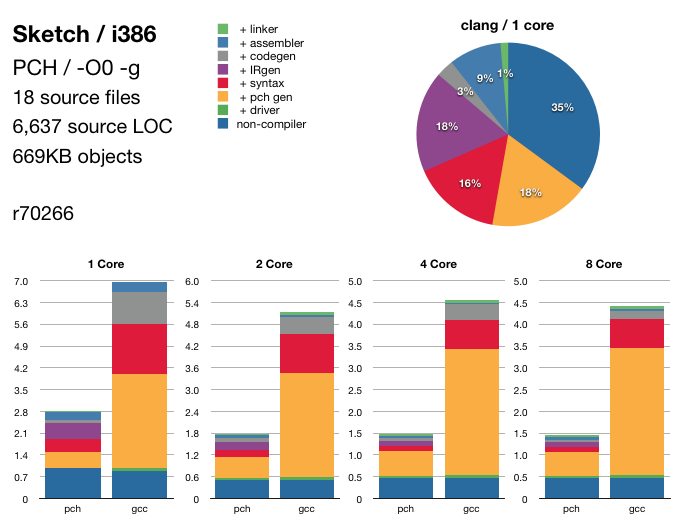

Clang - Performance
This page shows the compile time performance of Clang on two interesting benchmarks:
- Sketch: The Objective-C example application shipped on Mac OS X as part of Xcode. Sketch is indicative of a "typical" Objective-C app. The source itself has a relatively small amount of code (~7,500 lines of source code), but it relies on the extensive Cocoa APIs to build its functionality. Like many Objective-C applications, it includes Cocoa/Cocoa.h in all of its source files, which represents a significant stress test of the front-end's performance on lexing, preprocessing, parsing, and syntax analysis.
- 176.gcc: This is the gcc-2.7.2.2 code base as present in SPECINT 2000. In contrast to Sketch, 176.gcc consists of a large amount of C source code (~200,000 lines) with few system dependencies. This stresses the back-end's performance on generating assembly code and debug information.
For previous performance numbers, please go here.
Experiments
Measurements are done by running a full build (using xcodebuild or make for Sketch and 176.gcc respectively) using Clang and gcc 4.2 as compilers.
In order to track the performance of various subsystems the timings have been broken down into separate stages where possible. This is done by over-riding the CC environment variable used during the build to point to one of a few simple shell scripts which may skip part of the build.
- non-compiler: The overhead of the build system itself; for Sketch this also includes the time to build/copy various non-source code resource files.
- + driver: Add execution of the driver, but do not execute any commands (by using the -### driver option).
- + pch gen: Add generation of PCH files (if used).
- + syntax: Add preprocessing, parsing, and semantic checking of source files.
- + IRgen: Add generation of LLVM IR (gcc has no corresponding phase).
- + codegen: Add generation of assembler files.
- + assembler: Add assembler time to generate .o files.
- + linker: Add linker time.
This set of stages is chosen to be approximately additive, that is each subsequent stage simply adds some additional processing. The timings measure the delta of the given stage from the previous one. For example, the timings for + syntax below show the difference of running with + syntax versus the times for + pch gen. This amounts to a fairly accurate measure of only the time to perform preprocessing, parsing, and semantic analysis after PCH generation is done.
Timing Results
2009-06-26
